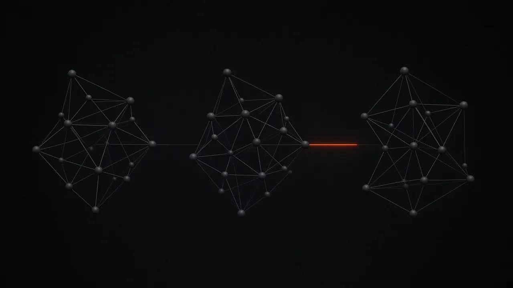
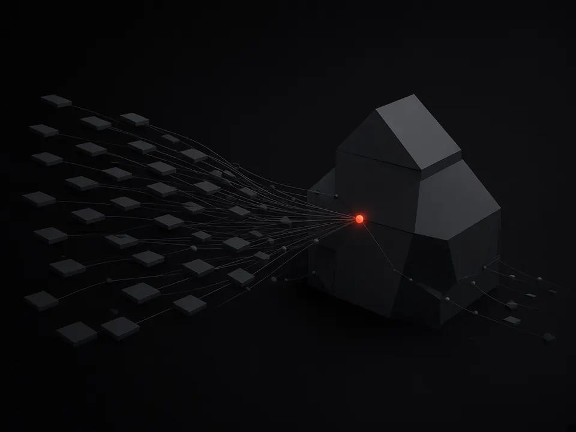

Applications métiers
Un même principe. Des processus propres à chaque entreprise.
EXIOR n’impose pas un logiciel standard. Le départ est l’opération, l’outil déjà là, et la règle du métier.
990 € · Livraison sous 7 jours ouvrés

Coordonnez les copropriétés, pas seulement leurs documents.
Factures, correspondances, relevés, fournisseurs, copropriétaires, échéances et interventions traversent plusieurs applications.

- 1Identification
La copropriété est la clé du dossier.
- 2Pièces
Vérification. Le manque devient une exception.
- 3Contrôle comptable
Règle avant écriture.
- 4Réponse
Préparation, pas envoi automatique.
- 5Validation
Les cas sensibles remontent à une personne.
Résultat recherché : moins de coordination manuelle, continuité de traitement, visibilité sur les dossiers. Aucun volume n’est promis.
Faites avancer vos dossiers entre les outils et les équipes.
Les logiciels tiennent la production. Les pièces manquantes, les échanges et les échéances demandent une organisation transverse.

- 1Demande
Le besoin entre avec une référence client.
- 2Pièces
Réception contrôlée contre la liste attendue.
- 3Dossier
L’état est mis à jour dans l’outil de production.
- 4Contrôle
Le collaborateur garde la responsabilité professionnelle.
Résultat recherché : des dossiers qui avancent avec moins de relances répétées, sans retirer la responsabilité de l’expert.
Reliez la demande client à son exécution sur le terrain.
Demande, devis, planification, intervention, justificatif, compte rendu et facture reposent souvent sur plusieurs supports.

- 1Contexte
La demande est rattachée au client et au site.
- 2Répartition
Tâche administrative ou intervention.
- 3Suivi
Chaque étape a un état.
- 4Imprévu
L’écart revient à une personne, pas à une boucle silencieuse.
Résultat recherché : continuité entre l’administration, les techniciens et le client.
Analyse de données et pilotage
L’architecture nomme la donnée qui fait foi, le contrôle de qualité, l’exception et l’indicateur lu par le responsable. Elle ne livre pas un entrepôt ni un tableau de bord en production.
- 1Source de vérité
Un objet métier, un système qui fait foi.
- 2Qualité
Champ obligatoire, doublon, délai. Le critère est écrit.
- 3Exception
L’écart stoppe le flux et ouvre une tâche.
- 4Pilotage
L’indicateur est défini : file d’exceptions, âge des dossiers, étapes en attente de validation.
- 5Décision
Le responsable lit l’indicateur. L’architecture ne décide pas à sa place.
Votre activité est différente ? Le point de départ reste le même.
Nous étudions les organisations où l’information passe entre des systèmes, des personnes et des décisions.